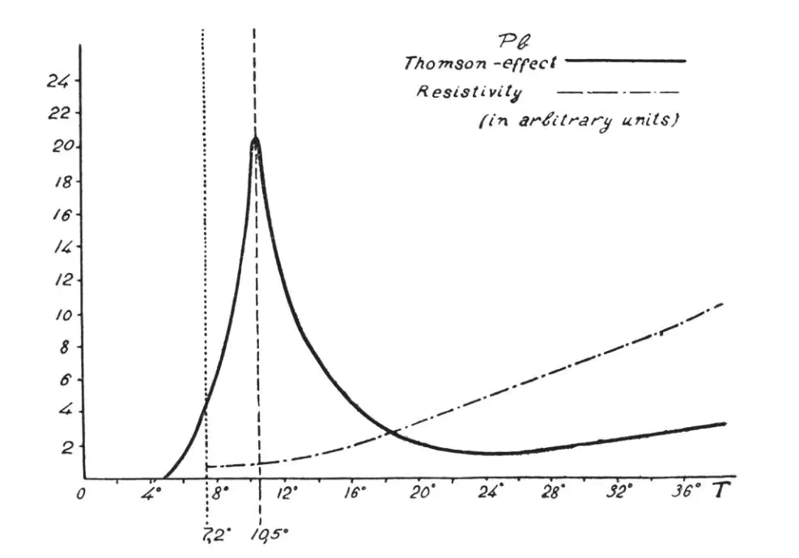
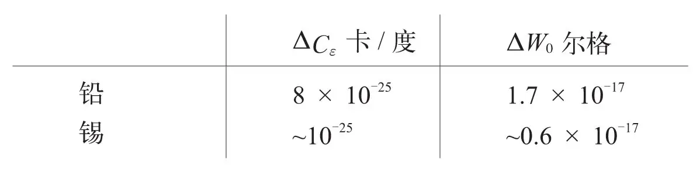
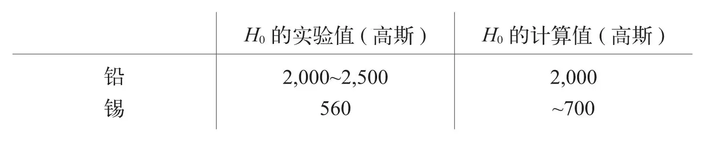

英文
英文多尔夫曼
编者按
超导电性，即某些金属在低温下无阻的传导电流，是1911年被首次观察到的，但没有给出解释。有不少人猜测电子之间的某种相干行为应是产生超导性的原因，在下文中，俄罗斯物理学家多尔夫曼用实验揭示了超导性与磁性之间的相似性。他研究了铅的温度与热电效应（由热生电的现象）的关系，发现在超导转变温度附近存在一个尖点，这使他猜想在铁磁和超导转变之间存在着某种相似性。在今天看来，虽然磁性本身与超导性无关，但两者都属于同种类型的“临界”转变。 英文
人们通常假设，从正常传导性到超导性的转变可能与导电电子的某种“自发耦合”有关。某些作者甚至倾向于认为超导现象等同于铁磁现象。虽然这个极端的观点似乎不存在成立的可能，但是，如果超导性真的是由电子间的某种“自发耦合”引起的，那么它就一定会表现出与铁磁性类似的行为。例如，超导体的比热曲线在转变温度附近的形状应该与铁磁体的比热曲线在居里点附近的形状相似。凯索姆与范登恩德[1]，以及西蒙与门德尔松[2]都试图去揭露铅的比热在超导转变温度（7.2 K）附近的这种反常行为，但是他们都未能探测到这种行为的任何迹象。该结果也许可以从两个角度来解释：要么是由于超导体中导电电子的“自发耦合”假说是完全错误的，要么就是由于在传导性中计入的电子的数目较之原子的数目而言太小，以至于无法用量热法探测出由传导电子引起的比热反常。 英文
正如我们的测量结果所表明的那样，铁磁体在居里点的比热反常表现在热电效应（汤姆孙效应）上是非常显著的，以至于尽管有关此效应的正负号确定还存在一定的困难，但由纯热电常数计算出来的比热反常的数量级与量热法的测量值还是符合得很好。人们很自然地想到将这种方法用于超导性领域。最近，博雷柳斯、凯索姆、约翰松与林德[3]研究了在对最低温度下铅和锡的温差电势，这使我们能够计算这两种金属的汤姆孙效应，并可得到关于比热反常的结论。图1给出了铅的汤姆孙系数（由实验数据计算得出）与温度的函数关系。这条曲线和铁磁物质的曲线十分相似，且很可能代表了与传导性效应有关的电子的比热的普遍特征。不过，我们还不清楚为什么这条比热曲线上最大值所相应的温度（10.5 K）与超导转变温度（7.2 K）不一致。也许未来的理论可以解释这一分歧。 英文

图1 英文
由这些结果可以计算出两个重要的物理量：首先是ΔCε（比热曲线上最大值的高度），其次是ΔW0（绝对零度下正常态和超导态的能量差），两者都是针对一个电子。 英文

倘若铅中的电子数目与原子的数目相等，则比热反常就一定能被探测到，因为它的数值与正常态的比热同量级。根据量热法的测量精度，我们可以确定铅中参与传导效应的电子数目的上限。实际上，导电电子的数目比此情况下原子数目的1/200还要少。 英文
众所周知，磁场会破坏超导性，磁场H的阈值随着温度的降低而增大。从实验数据可以推出：临界场H0的值可能与绝对零度有关。我们假设场的阈值通过电子的磁能|μH0|（μ为自旋磁矩）等于ΔW0来确定。 英文
|μH0|=ΔW0 （1） 英文
这个假设意味着：当外力的能量超过“自发耦合”的能量时，超导性一定会被破坏。我们可以由式（1）计算铅和锡的临界场H0，并把它们与实验结果作比较。 英文

根据麦克伦南及其合作者近期的实验[4]，如果超导体中高频电流的频率v超过了某一临界值，则超导现象就会消失。从较高温度下的实验数据可以推出，绝对零度下锡的v~109。有趣的是，通过假设
hv0=ΔW0=|μH0| （2）
（h是普朗克常数），对同一金属我们也可得到v0 = 1×109。 英文
实验值和计算值的明显致似乎支持了我们在文中提出的假设。有趣的是：对应于H0的拉莫尔进动频率恰等于v0；因此，两个破坏超导性的因素之间的关联既可以体现在能量的关系上，也可以体现在短周期的关系上。究竟这些解释中的哪一个对应真正的超导性机理，现在还没有答案。 英文
（王静 翻译；陶宏杰 审稿）